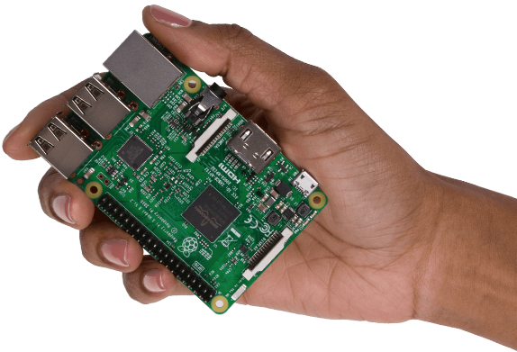
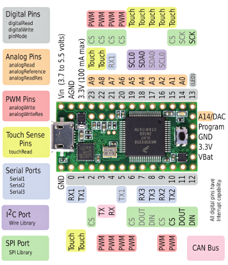

Beau Harrison
Accelerator Division
Operations
Enclosure Status
Shift Roster
Single Board Computer ACNET Sensors
ACNET (ACcelerator NETwork) is the hardware and software infrastructure for reading from and making changes to the accelerators.
Single Board Computer
Raspberry Pi
Python running on Linux
Analog to Digital Converter
Arduino
Arduino flavor of C
Data Visualization
Coding Club Objective
- Share resources
- Learn new tools
My Everyday Resources
- Stack Exchange
- YouTube
- Podcasts
- Use simple language
- Quotes
- "I need this exact phrase"
- Site search
- site:fnal.gov cafeteria menu
- Exclude terms
- Ford Mustang -red
- OR operator
- puppies OR kittens OR dolphins
- Wildcard
- how to find * on Google
Stack Exchange
Self-moderating question-and-answer site
YouTube
- freeCodeCamp - Web development
- GameDevLessons - Speed coding
- Layout Land - CSS design
- The Coding Train - Machine learning
- Derek Banas - C and C++, many others
- Ben Eater - Electronics, computer architecture, and networking
- Crash Course - Many topics
- Khan Academy - Economics, math, and science
- CS Dojo - Python
- DevTips - Web design
Podcasts
Questions?
Future presentations
- Android App
- Bash
- Functional programming
- Regular expressions
- ACNET
- Robot